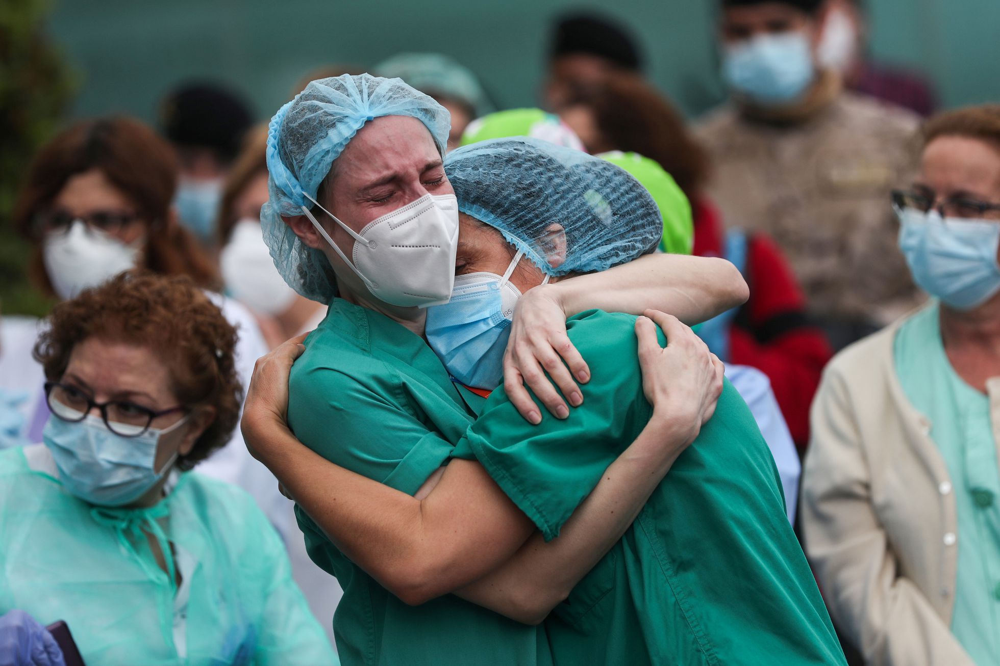
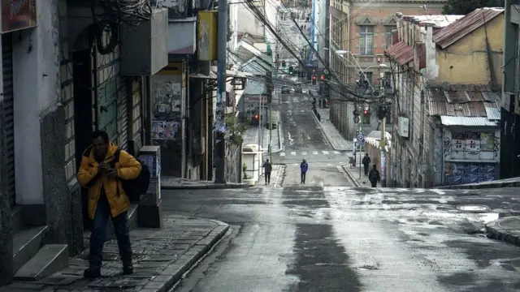

¿Cuántas vidas se ha cobrado el COVID-19 en el mundo?
Hasta finales de 2025, se han reportado oficialmente alrededor de 7,1 millones de muertes confirmadas por COVID-19 en todo el mundo. Sin embargo, estudios de exceso de mortalidad estiman que el número real de fallecimientos ligados directa o indirectamente a la pandemia podría superar los 14,9 millones.
Saturación del sistema de salud
En muchos lugares, los hospitales se vieron sobrepasados por la cantidad de pacientes que requerían cuidados intensivos, lo que aumentó la mortalidad entre personas que no pudieron recibir atención a tiempo.
Factores de riesgo
Adultos mayores, personas con enfermedades crónicas y quienes vivían en zonas con limitado acceso a atención médica tuvieron mayor vulnerabilidad. Este grupo concentró la mayoría de los fallecimientos.

Impacto social
La pérdida de vidas tuvo un profundo efecto emocional y social. Muchas familias enfrentaron duelos sin poder despedirse debido a restricciones sanitarias.
